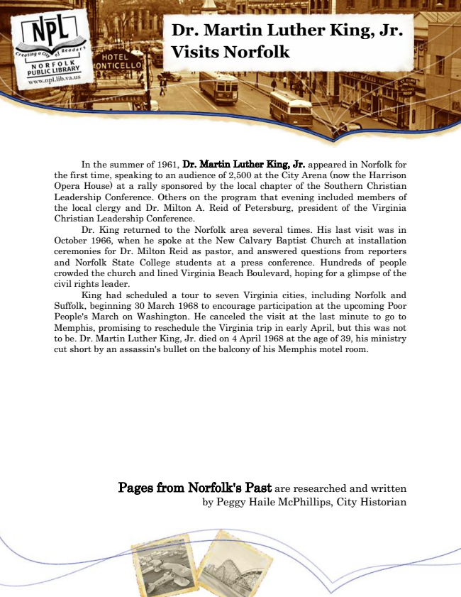

Dr. Martin Luther King, Jr. Visits Norfolk
In the summer of 1961, Dr. Martin Luther King, Jr. appeared in Norfolk for the first time, speaking to an audience of 2,500 at the City Arena (now the Harrison Opera House) at a rally sponsored by the local chapter of the Southern Christian Leadership Conference. Others on the program that evening included members of the local clergy and Dr. Milton A. Reid of Petersburg, president of the Virginia Christian Leadership Conference.
Dr. King returned to the Norfolk area several times. His last visit was in October 1966, when he spoke at the New Calvary Baptist Church at installation ceremonies for Dr. Milton Reid as pastor, and answered questions from reporters and Norfolk State College students at a press conference. Hundreds of people crowded the church and lined Virginia Beach Boulevard, hoping for a glimpse of the civil rights leader.
King had scheduled a tour to seven Virginia cities, including Norfolk and Suffolk, beginning 30 March 1968 to encourage participation at the upcoming Poor People's March on Washington. He canceled the visit at the last minute to go to Memphis, promising to reschedule the Virginia trip in early April, but this was not to be. Dr. Martin Luther King, Jr. died on 4 April 1968 at the age of 39, his ministry cut short by an assassin's bullet on the balcony of his Memphis motel room.
Pages from Norfolk's Past are researched and written by Peggy Haile McPhillips, City Historian